Changelog:
- Cluster docker con Spark, MySQL, MinIO y Kafka — Mayo 2026
- Uso de Kafka 4.0, añadiendo KRaft — Mayo 2026
- Tipos de conexión a Kafka — Mayo 2026
- Añadimos FAQ — Mayo 2026
Apache Kafka¶
Introducción¶
Apache Kafka es, en pocas palabras, un middleware de mensajería entre sistemas heterogéneos, el cual, mediante un sistema de colas (topics, para ser concreto) facilita la comunicación asíncrona, desacoplando los flujos de datos de los sistemas que los producen o consumen. Funciona como un broker de mensajes, encargado de enrutar los mensajes entre los clientes de un modo muy rápido.
Supongamos que tenemos múltiples generadores de datos, ya sean servidores web, de bases de datos, un servidor de chat y que todos ellos tienen que almacenar sus datos en múltiples destinos, como pueden ser logs, métricas de rendimiento y monitorización, el carrito de la compra o los fallos ocurridos, lo que puede provocar una serie de dependencias de unos con otros. Para evitarlo, Kafka viene al rescate conectando todos los generadores de datos (productores) a Kafka y a su vez, a todos los consumidores de estos datos.
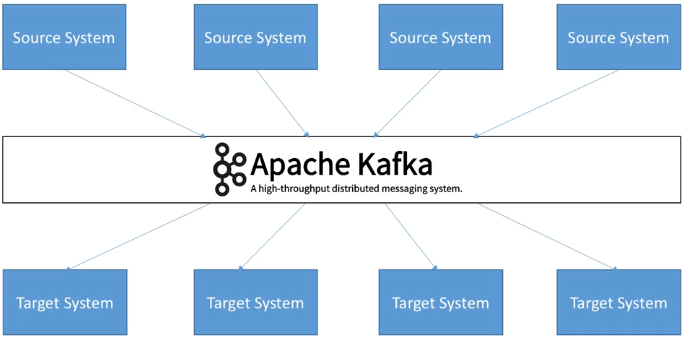
En concreto, se trata de una plataforma open source distribuida de transmisión de eventos/mensajes en tiempo real con almacenamiento duradero y que proporciona de base un alto rendimiento (capaz de manejar billones de peticiones al día, con una latencia inferior a 10ms), tolerancia a fallos, disponibilidad y escalabilidad horizontal (mediante cientos de nodos).
Evento / Mensaje
Dentro del vocabulario asociado a arquitecturas asíncronas basadas en productor/consumidor o publicador/suscriptor, se utiliza el mensaje para indicar el dato que viaja desde un punto a otro. En Kafka, además de utilizar el concepto mensaje, se emplea el término evento.
Más del 80% de las 100 compañías más importantes de EEUU utilizan Kafka: Uber, Twitter, Netflix, Spotify, Blizzard, LinkedIn y PayPal procesan cada día sus mensajes con Kafka.
Como sistema de mensajes, sigue un modelo publicador-suscriptor. Su arquitectura tiene dos directivas claras:
- No bloquear los productores (para poder gestionar la back pressure, la cual sucede cuando un publicador produce más elementos de los que un suscriptor puede consumir).
- Aislar los productores y los consumidores, de manera que los productores y los consumidores no se conocen.
A día de hoy, Apache Kafka se utiliza, además de como un sistema de mensajería, para ingestar datos, realizar procesado de datos en streaming y analítica de datos en tiempo real, así como en arquitecturas de microservicios y sistemas IoT.
Amazon Kinesis
Amazon Kinesis es un producto similar a Apache Kafka pero dentro de la plataforma AWS, por lo que no es un producto open source como tal. Su principal ventaja es la facilidad de escalabilidad a golpe de click e integración con el resto de servicios que ofrece AWS. Se trata de una herramienta muy utilizada que permite incorporar datos en tiempo real, como vídeos, audios, registros de aplicaciones, secuencias de clicks de sitios web y datos de sensores IoT para machine learning, analítica de datos en streaming, etc...
Confluent
Confluent es una solución PaaS que ofrece el despliegue y la monitorización de Kafka en un producto. Pese a existir una versión Community que podemos probar en local (incluso mediante Docker), los requisitos a nivel de RAM son bastante altos, ya que requiere un mínimo de 8GB de RAM sólo para Kafka, con lo que el ordenador host debe tener mínimo 12GB de RAM.
Publicador / Suscriptor¶
Antes de entrar en detalle sobre Kafka, hay que conocer el modelo publicador/suscriptor. Este patrón también se conoce como publish / subscribe o productor / consumidor.
Hay tres elementos que hay que tener realmente claros:
- Publicador (publisher / productor / emisor): genera un dato y lo coloca en un topic como un mensaje.
- Topic (tema): almacén temporal/duradero que guarda los mensajes funcionando como una cola.
- Suscriptor (subscriber / consumidor / receptor): recibe el mensaje.
Cabe destacar que un productor no se comunica nunca directamente con un consumidor, siempre lo hace a través de un topic:
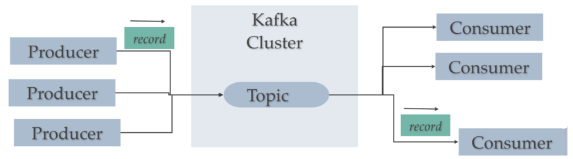
Caso 0: Hola Kafka¶
Para arrancar Kafka y dar nuestros primeros pasos, vamos a utilizar dos posibles entornos: el clúster Docker del curso (recomendado) y la instalación nativa que tenemos en la máquina virtual.
Partimos del stack Docker del curso, que incluye un broker de Kafka basado en la imagen oficial apache/kafka:latest (Kafka 4.x) ejecutándose en modo KRaft (sin ZooKeeper) y, junto a él, una interfaz web (Kafka UI) para visualizar topics, mensajes y grupos de consumidores.
El servicio relevante del docker-compose.yml es:
kafka:
image: apache/kafka:latest
environment:
KAFKA_NODE_ID: 1
KAFKA_PROCESS_ROLES: broker,controller
KAFKA_LISTENERS: PLAINTEXT://:9092,CONTROLLER://:9093,EXTERNAL://:9094
KAFKA_ADVERTISED_LISTENERS: PLAINTEXT://kafka:9092,EXTERNAL://localhost:9094
# ...
ports:
- '9094:9094'
Si todavía no lo has hecho, arrancamos Kafka y Kafka UI haciendo uso del perfil de Docker kafka (con -d para que queden en segundo plano):
docker compose --profile kafka up -d
Dos puertos, dos perspectivas
El broker expone dos puntos de acceso:
kafka:9092— para clientes que se ejecutan dentro de la red Docker (otros contenedores del compose, por ejemplo Jupyter, Spark o Nifi).localhost:9094— para clientes que se ejecutan desde tu máquina anfitriona (por ejemplo, un script Python lanzado desde VSCode).
Hablaremos del porqué cuando expliquemos los advertised listeners. De momento, recuerda esta regla.
A diferencia de la máquina virtual, en Docker no hace falta arrancar manualmente ZooKeeper ni Kafka: los servicios se levantan automáticamente, ya configurados en modo KRaft.
En la máquina virtual tenemos Kafka 3.3.1 instalado en /opt/kafka_2.13-3.3.1 y, a diferencia del entorno Docker, esta versión necesita ZooKeeper para coordinar el clúster.
Kafka sin ZooKeeper
A partir de Kafka 4.0 (marzo 2025), ZooKeeper ha sido eliminado por completo en favor del protocolo KRaft. La VM del curso conserva la instalación clásica con ZooKeeper por motivos didácticos, pero en cualquier despliegue moderno (incluido el Docker del curso), trabajaremos sin él.
El primer paso, una vez dentro de la carpeta de instalación de Kafka, es arrancar ZooKeeper mediante el comando zookeeper-server-start.sh, que se encarga de gestionar la comunicación entre los diferentes brokers:
zookeeper-server-start.sh ./config/zookeeper.properties
zookeeper.properties
Del archivo de configuración de ZooKeeper conviene destacar dos propiedades:
clientPort: puerto por defecto (2181)dataDir: indica dónde está el directorio de datos de ZooKeeper (por defecto es/tmp/zookeeper, pero si queremos que dicha carpeta no se elimine es mejor que apunte a una ruta propia, por ejemplo/opt/zookeeper-data)
Para comprobar que ZooKeeper está arrancado, podemos ejecutar el comando lsof -i :2181, que escanea el puerto 2181 donde está corriendo ZooKeeper.
Una vez comprobado, en un nuevo terminal, arrancamos el servidor de Kafka mediante el comando kafka-server-start.sh (de manera que tenemos corriendo a la vez ZooKeeper y Kafka):
kafka-server-start.sh ./config/server.properties
Instalación de pruebas
En nuestra máquina virtual, en los archivos de configuración, hemos puesto que todas las rutas utilicen /tmp para no llenar el disco duro de datos, en concreto la propiedad log.dirs.
Por ello, entre cada reinicio de la máquina virtual, tendremos que volver a crear los diferentes topics, habiendo perdido los mensajes que no se hubieran consumido.
Kafka CLI¶
Para comenzar, vamos a interactuar con Kafka a través de su línea de comandos, utilizando los binarios que vienen con la instalación.
Todas las herramientas CLI de Kafka (kafka-topics.sh, kafka-console-producer.sh, kafka-console-consumer.sh, etc.) reciben siempre como parámetro el broker de arranque (--bootstrap-server). Lo que cambia entre los dos entornos es dónde se ejecutan los comandos y a qué dirección apuntan:
En Docker, los binarios de Kafka viven dentro del contenedor, en /opt/kafka/bin/ y el bootstrap server es kafka:9092. Para ejecutarlos, usamos docker exec:
docker exec -it iabd-kafka /opt/kafka/bin/kafka-topics.sh --list --bootstrap-server kafka:9092
Como vamos a ejecutar varios comandos de Kafka a lo largo de la sesión, abriremos directamente una terminal dentro del contenedor para no tener que escribir docker exec ... cada vez, indicando el directorio de trabajo con --workdir:
docker exec -it --workdir /opt/kafka/bin iabd-kafka bash
Una vez dentro, ya podemos listar los topics sin necesidad de escribir la ruta completa (siempre empezando los comandos con ./ para indicar que el binario está en el directorio actual):
./kafka-topics.sh --list --bootstrap-server kafka:9092
En la VM, los comandos se ejecutan directamente en el terminal (los binarios están en el PATH tras la instalación) y apuntan a iabd-virtualbox:9092:
kafka-topics.sh --list --bootstrap-server iabd-virtualbox:9092
Creando un topic¶
Toda interacción con Kafka se hace a través de los topics, por lo que el primer paso es crear uno. Para ello, emplearemos el comando kafka-topics.sh, tanto para crear como para consultar los topics existentes. Dicho esto, para crear un topic, utilizamos el parámetro --create:
./kafka-topics.sh --create --topic iabd-topic --bootstrap-server kafka:9092
kafka-topics.sh --create \
--topic iabd-topic \
--bootstrap-server iabd-virtualbox:9092
Si quisiéramos comprobar los topics que hemos creado, podemos obtener un listado mediante el parámetro --list:
./kafka-topics.sh --list --bootstrap-server kafka:9092
# iabd-topic
kafka-topics.sh --list --bootstrap-server iabd-virtualbox:9092
# iabd-topic
Si queremos obtener la descripción del topic creado con la cantidad de particiones, le pasamos el parámetro --describe:
./kafka-topics.sh --describe --topic iabd-topic --bootstrap-server kafka:9092
Obtendremos información similar a:
Topic: iabd-topic TopicId: HaSaTm6ARzWPgFZ1WlHW6Q PartitionCount: 3 ReplicationFactor: 1 Configs:
Topic: iabd-topic Partition: 0 Leader: 1 Replicas: 1 Isr: 1 Elr: LastKnownElr:
Topic: iabd-topic Partition: 1 Leader: 1 Replicas: 1 Isr: 1 Elr: LastKnownElr:
Topic: iabd-topic Partition: 2 Leader: 1 Replicas: 1 Isr: 1 Elr: LastKnownElr:
¿Por qué 3 particiones?
En el docker-compose.yml hemos configurado KAFKA_NUM_PARTITIONS: 3, así cada topic nuevo arranca con 3 particiones sin tener que indicarlo en el --create. En la máquina virtual, en cambio, la propiedad equivalente del server.properties es num.partitions=1, por lo que allí los topics arrancan con una sola partición.
kafka-topics.sh --describe \
--topic iabd-topic \
--bootstrap-server iabd-virtualbox:9092
Obtendremos información similar a:
Topic: iabd-topic TopicId: ogKnRpOFS7mfOhspLcuB4A PartitionCount: 1 ReplicationFactor: 1 Configs: segment.bytes=1073741824
Topic: iabd-topic Partition: 0 Leader: 0 Replicas: 0 Isr: 0
Visualizando con Kafka UI
Si estás trabajando en el entorno Docker, puedes hacer uso de Kafka UI, el cual ya está instalado. En cambio, si usas la máquina virtual, deberás instalarlo manualmente.
Junto al broker, el docker-compose.yml arranca también un servicio de Kafka UI (la imagen provectuslabs/kafka-ui) accesible en http://localhost:8081.
Esta interfaz web nos permite, sin tocar la línea de comandos:
- Ver el listado de brokers, topics y particiones del clúster.
- Inspeccionar mensajes en un topic (incluyendo clave, offset, timestamp y headers).
- Crear y eliminar topics gráficamente.
- Consultar grupos de consumidores y su lag.
- Visualizar la configuración del clúster y de cada topic.
A lo largo de la sesión iremos validando los comandos de la CLI con esta UI: cada vez que creemos un topic, enviemos mensajes o configuremos un grupo de consumidores, la información aparecerá reflejada en la web.
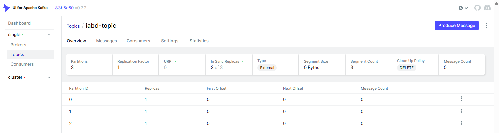
Produciendo mensajes¶
Para enviar un mensaje a un topic, ejecutaremos un productor mediante el comando kafka-console-producer.sh. Por defecto, cada línea que introduzcamos resultará en un evento separado que escribirá un mensaje en el topic (podemos pulsar Ctrl+C en cualquier momento para terminar):
./kafka-console-producer.sh --topic iabd-topic --bootstrap-server kafka:9092
kafka-console-producer.sh \
--topic iabd-topic \
--bootstrap-server iabd-virtualbox:9092
Así pues, escribimos los mensajes que queramos:
>Este es un mensaje
>Y este es otro
>Y el tercero
Consumiendo mensajes¶
Y finalmente, en otro terminal (recuerda abrirlo mediante docker exec -it --workdir /opt/kafka/bin kafka bash), vamos a consumir los mensajes:
./kafka-console-consumer.sh --topic iabd-topic --from-beginning --bootstrap-server kafka:9092
# Este es un mensaje
# Y este es otro
# Y el tercero
Y finalmente, en otro terminal, vamos a consumir los mensajes:
kafka-console-consumer.sh \
--topic iabd-topic --from-beginning \
--bootstrap-server iabd-virtualbox:9092
# Este es un mensaje
# Y este es otro
# Y el tercero
Al ejecutarlo veremos los mensajes que habíamos introducido antes (ya que hemos indicado la opción --from-beginning). Si ahora volvemos a escribir en el productor, casi instantáneamente, aparecerá en el consumidor el mismo mensaje.
Si accedemos de nuevo a Kafka UI, veremos el topic con sus mensajes:
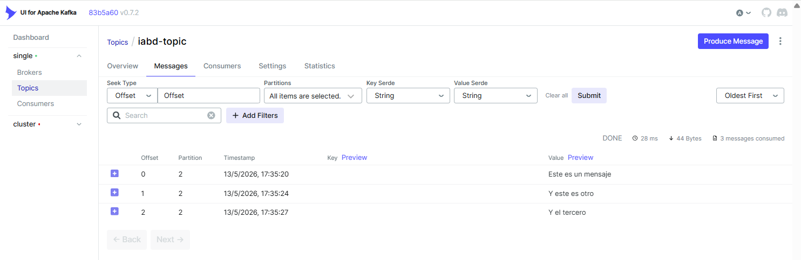
Tras esto, paramos todos los procesos que se están ejecutando mediante Ctrl+C y hemos finalizado nuestro primer contacto con Kafka.
Elementos¶
Dentro de una arquitectura con Kafka, existen múltiples elementos que interactúan entre sí.
Topic y Particiones¶
Un topic (¿tema?) es un flujo particular de datos que funciona como una cola almacenando de forma temporal o duradera los datos que se colocan en él.
Podemos crear tantos topics como queramos y cada uno de ellos tendrá un nombre unívoco.
Un topic se divide en particiones, las cuales se numeran, siendo la primera la 0. Al crear un topic podemos indicar la cantidad de particiones inicial, la cual podemos modificar a posteriori (en nuestra máquina virtual, en el archivo server.properties tenemos configurado que, por defecto, cada topic tenga una sola partición mediante la propiedad num.partitions=1).
Al crear un topic, si queremos indicar la cantidad de particiones, hemos de pasarle el parámetro --partitions y el número de particiones deseadas:
./kafka-topics.sh --create --topic iabd-topic-p3 --partitions 3 --bootstrap-server kafka:9092
kafka-topics.sh --create --topic iabd-topic-p3 --partitions 3 --bootstrap-server iabd-virtualbox:9092
Cada partición está ordenada, de manera que cada mensaje dentro de una partición tendrá un identificador incremental, llamado offset (desplazamiento). Cada partición funciona como un commit log almacenando los mensajes que recibe.
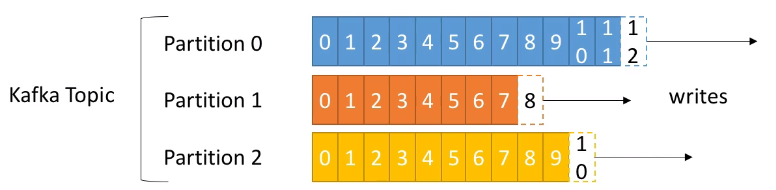
Como podemos observar en la imagen, cada partición tiene sus propios offset (el offset 3 de la partición 0 no representa el mismo dato que el offset 3 de la partición 1).
Habíamos comentado que las particiones están ordenadas, pero el orden sólo se garantiza dentro de una partición (no entre particiones), es decir, el mensaje 7 de la partición 0 puede haber llegado antes, a la vez, o después que el mensaje 5 de la partición 1.
Los datos de una partición tienen un tiempo de vida limitado (retention period) que indica el tiempo que se mantendrán los mensajes antes de eliminarlos. Por defecto es de una semana. Además, una vez que los datos se escriben en una partición, no se pueden modificar (los mensajes son inmutables).
Finalmente, por defecto, los datos se asignan de manera aleatoria a una partición. Sin embargo, existe la posibilidad de indicar una clave de particionado.
Borrando un topic
Para eliminar un topic, le pasaremos el parámetro --delete:
./kafka-topics.sh --delete --topic iabd-topic --bootstrap-server kafka:9092
kafka-topics.sh --delete --topic iabd-topic --bootstrap-server iabd-virtualbox:9092
Al borrar un topic, sus índices con el histórico no se eliminan, de manera que volver a crear un topic con el mismo nombre es una mala idea ya que podemos obtener datos incongruentes.
Brokers¶
Un clúster de Kafka está compuesto de múltiples nodos conocidos como Brokers, donde cada broker es un servidor de Kafka. Cada broker se identifica con un id, el cual debe ser un número entero.
Cada broker contiene un conjunto de particiones, de manera que un broker contiene parte de los datos, nunca los datos completos ya que Kafka es un sistema distribuido. Al conectarse a un broker del clúster (bootstrap broker), automáticamente nos conectaremos al clúster entero.
Para comenzar se recomienda una arquitectura de 3 brokers, aunque algunos clústers lo forman cerca de un centenar de brokers.
Por ejemplo, el siguiente gráfico muestra un clúster con tres brokers, de manera que el topic A está dividido en tres particiones, cada una de ellas residiendo en un broker diferente (no hay ninguna relación entre el número de la partición y el nombre del broker), y el topic B está a su vez dividido en dos particiones:
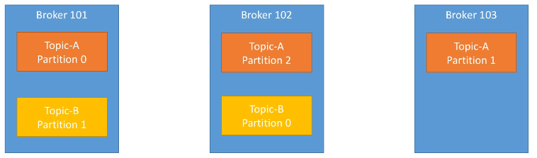
En el caso de haber introducido un nuevo topic con 4 particiones, uno de los brokers contendría dos particiones. En la siguiente sesión utilizaremos un clúster de 3 brokers, de manera que cada topic con 3 particiones tendrá una partición en cada broker.
Factor de replicación¶
Para soportar la tolerancia a fallos, los topics deben tener un factor de replicación mayor que uno (normalmente se configura entre 2 y 3).
En la siguiente imagen podemos ver como tenemos 3 brokers, y un topic A con dos particiones y un factor de replicación de 2, de manera que cada partición crea una réplica de sí misma:
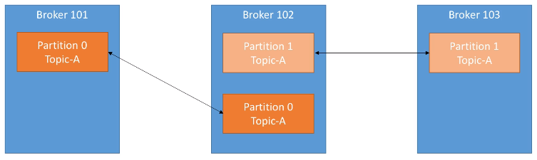
Para crear la configuración del gráfico, debemos indicar el factor de replicación mediante --replication-factor:
./kafka-topics.sh --create --topic TopicA --partitions 2 --replication-factor 2 --bootstrap-server kafka:9092
# Si lo ejecutamos sobre nuestra instalación, fallará porque sólo tenemos un broker.
# En un clúster con 3 brokers funcionará correctamente.
kafka-topics.sh --create --topic TopicA --partitions 2 --replication-factor 2 --bootstrap-server iabd-virtualbox:9092
Si se cayera el broker 102, Kafka podría devolver los datos al estar disponibles en los nodos 101 y 103.
Réplica líder¶
Acabamos de ver que cada broker tiene múltiples particiones, y cada partición tiene múltiples réplicas, de manera que, si se cae un nodo/broker, Kafka puede utilizar otro broker para servir los datos.
En cualquier instante, una determinada partición tendrá una única réplica que será la líder, y esta réplica líder será la única que pueda recibir y servir los datos de una partición. La réplica líder es importante porque todas las lecturas y escrituras siempre van a esta réplica. El resto de brokers sincronizarán sus datos. En resumen, cada partición tendrá un líder y múltiples ISR (in-sync replica).
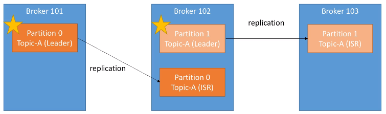
Si se cayera el Broker 101 , entonces la partición 0 del Broker 102 se convertiría en la líder. Y cuando vuelva a funcionar el Broker 101, intentará volver a ser la partición líder.
Productores¶
Los productores escriben datos en los topics, sabiendo automáticamente el broker y la partición en la cual deben escribir. En el caso de un fallo de un broker, los productores automáticamente se recuperan y se comunican con el broker adecuado.
Si el productor envía los datos sin una clave determinada, Kafka aplica una estrategia de sticky partitioning: agrupa mensajes consecutivos en la misma partición para formar batches eficientes, y va rotando entre particiones a lo largo del tiempo. El resultado es un reparto equilibrado, pero no estrictamente mensaje a mensaje como sería un round robin clásico:
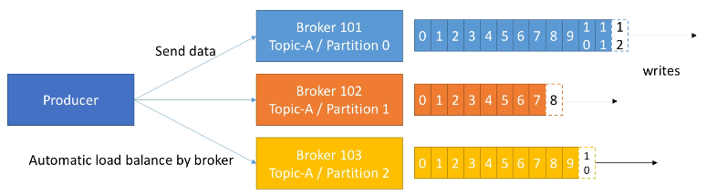
Podemos configurar los productores para que reciban un ACK de las escrituras de los datos con los siguientes valores:
ack=0: El productor no espera la confirmación (posible pérdida de datos), lo que se traduce en un envío asíncrono.ack=1: El productor espera la confirmación del líder (limitación de la pérdida de datos), de manera que los envíos son síncronos.ack=all: El productor espera la confirmación del líder y de todas las réplicas (sin pérdida de datos).
Clave de mensaje¶
Los productores pueden enviar una clave con el mensaje (de tipo cadena, numérico, etc...). Cuando la clave no se envía, ya hemos comentado que los datos se envían mediante sticky partitioning. Sin embargo, si se envía la clave, Kafka utiliza un algoritmo de hash para determinar a qué partición se asignará el mensaje, de manera que todos los mensajes con la misma clave siempre irán a la misma partición. Por lo tanto, enviaremos una clave cuando necesitemos ordenar los mensajes por un campo específico (por ejemplo, el identificador de una operación).
Para enviar mensajes con la clave, desde el terminal, necesitamos indicar dos propiedades mediante --property:
parse.key: si estrue, obligatoriamente enviaremos la clave (por defecto esfalse)key.separator: carácter para separar la clave del valor, por ejemplo,:,;, ....
Así pues, podemos enviar mensajes con clave mediante:
./kafka-console-producer.sh --topic iabd-topic \
--property "parse.key=true" --property "key.separator=:" \
--bootstrap-server kafka:9092
kafka-console-producer.sh --topic iabd-topic \
--property "parse.key=true" --property "key.separator=:" \
--bootstrap-server iabd-virtualbox:9092
Y luego enviar mensajes del estilo:
clave1:valor1
clave2:valor2
clave1:valor3
customer_id: {"customer_id":"1", "customer_fname": "Aitor", "customer_lname": "Medrano", "customer_email": "a.medrano@edu.gva.es"}
Consumidores¶
Los consumidores obtienen los datos de los topics y las particiones, y saben de qué broker deben leer los datos. Igual que los productores, en el caso de un fallo de un broker, los consumidores automáticamente se recuperan y se comunican con el broker adecuado.
Los datos se leen en orden dentro de cada partición, de manera que el consumidor no podrá leer, por ejemplo, los datos del offset 6 hasta que no haya leído los del offset 5. Además, un consumidor puede leer de varias particiones (se realiza en paralelo), pero el orden sólo se respeta dentro de cada partición, no entre particiones:
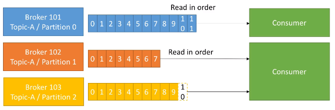
Grupo de consumidores¶
Un consumidor puede pertenecer a un grupo de consumidores, de manera que cada uno de los consumidores del grupo obtendrán una parte de los datos, es decir, una partición de un topic.
Por ejemplo, tenemos una aplicación compuesta de dos consumidores, formando un grupo de consumidores. El consumidor 1 lo hará de dos particiones, y el consumidor 2 lo hará de la tercera partición. También tenemos otra aplicación compuesta de tres consumidores, de manera que cada consumidor lo hará de cada una de las particiones. Finalmente, tenemos un tercer grupo de consumidores formado por un único consumidor que leerá las tres particiones. En conclusión, cada grupo de consumidores funciona como un único consumidor de manera que accede a todas las particiones de un topic.
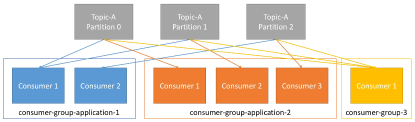
Coordinando los consumidores
Los consumidores, por sí solos, no saben con qué partición se deben comunicar. Para ello, se utiliza un GroupCoordinator y un Consumer Coordinator para asignar los consumidores a cada partición. Esta gestión la realiza Kafka.
Cabe destacar que los diferentes grupos de consumidores reciben el mismo dato de cada partición, es decir, el consumidor 1 del grupo 1 y el consumidor 1 del grupo 2 reciben la información que había en la partición 0. Este caso de uso es muy útil cuando tenemos dos aplicaciones que queremos que reciban los mismos datos (por ejemplo, uno encargado de realizar machine learning y otro analítica de datos).
En el caso de tener más consumidores que particiones, algunos consumidores no realizarán nada. Este caso de uso es atípico, ya que lo recomendable es tener tantos consumidores como el mayor número de particiones existentes.
Probando los grupos de consumidores¶
Vamos a simular el gráfico anterior mediante un ejemplo con el terminal. Primero crearemos un topic que contenga tres particiones:
./kafka-topics.sh --create --topic iabd-topic-group --partitions 3 --bootstrap-server kafka:9092
kafka-topics.sh --create --topic iabd-topic-group --partitions 3 --bootstrap-server iabd-virtualbox:9092
Si comprobamos el estado del topic mediante:
./kafka-topics.sh --describe --topic iabd-topic-group --bootstrap-server kafka:9092
kafka-topics.sh --describe --topic iabd-topic-group --bootstrap-server iabd-virtualbox:9092
Obtendremos la siguiente información:
Topic: iabd-topic-group TopicId: p1i3m4fMRximngLjAV5rsA PartitionCount: 3 ReplicationFactor: 1 Configs: segment.bytes=1073741824
Topic: iabd-topic-group Partition: 0 Leader: 0 Replicas: 0 Isr: 0
Topic: iabd-topic-group Partition: 1 Leader: 0 Replicas: 0 Isr: 0
Topic: iabd-topic-group Partition: 2 Leader: 0 Replicas: 0 Isr: 0
A continuación, en dos pestañas diferentes (recuerda que cada pestaña representa un proceso independiente con el que nos conectamos a Kafka mediante docker exec -it --workdir /opt/kafka/bin iabd-kafka bash), vamos a crear dos consumidores que pertenezcan al mismo grupo de consumidores:
./kafka-console-consumer.sh --topic iabd-topic-group --group iabd-app1 --bootstrap-server kafka:9092
kafka-console-consumer.sh --topic iabd-topic-group --group iabd-app1 --bootstrap-server iabd-virtualbox:9092
Y finalmente, creamos un nuevo productor sobre el topic:
./kafka-console-producer.sh --topic iabd-topic-group --bootstrap-server kafka:9092
kafka-console-producer.sh --topic iabd-topic-group --bootstrap-server iabd-virtualbox:9092
Y si creamos varios mensajes en el productor, veremos cómo van llegando de manera alterna a los diferentes consumidores:
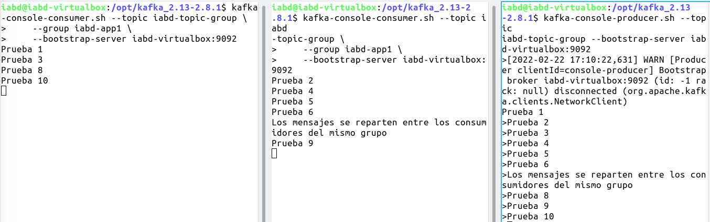
Autoevaluación
- ¿Qué sucederá si creamos un nuevo consumidor que lo haga del mismo topic pero con un grupo de consumidores diferente (por ejemplo,
iabd-app2) y le pedimos que lea los mensajes desde el principio (mediante--from-beginning) ?
Que aparecerán todos los mensajes desde el principio. - ¿Y si lo detenemos y volvemos a crear el mismo consumidor (también con el grupo de consumidores
iabd-app2y los vuelva a leer desde el principio también)?
En esta ocasión, ya no recibirá ningún mensaje, ya que el primer consumidor hace commit de la lectura y el segundo al hacerlo desde el mismo grupo de consumidores ya tiene los mensajes previos marcados como leídos. - ¿Y si detenemos todos los consumidores y seguimos creando mensajes en el productor?
Los mensajes se almacenan en el topic. - ¿Y si arrancamos de nuevo un consumidor sobre el grupo de consumidores
iabd-app2?
Que consumirá los mensajes que acabamos de crear.
Mediante el comando kafka-consumer-groups.sh podemos obtener información sobre los diferentes grupos de consumidores que tenemos creados, así como eliminarlos o resetear sus offsets.
Por ejemplo, si queremos listar los grupos de consumidores existentes ejecutaremos:
./kafka-consumer-groups.sh --list --bootstrap-server kafka:9092
kafka-consumer-groups.sh --list --bootstrap-server iabd-virtualbox:9092
En cambio, si queremos obtener la información de un determinado grupo ejecutaremos:
./kafka-consumer-groups.sh --describe --group iabd-app1 --bootstrap-server kafka:9092
kafka-consumer-groups.sh --describe --group iabd-app1 --bootstrap-server iabd-virtualbox:9092
Obteniendo información a destacar como:
CURRENT-OFFSET: valor actual del offsetLOG-END-OFFSET: offset del último mensaje de la particiónLAG: cantidad de mensajes pendientes de leer
GROUP TOPIC PARTITION CURRENT-OFFSET LOG-END-OFFSET LAG CONSUMER-ID HOST CLIENT-ID
iabd-app1 iabd-topic-group 0 4 4 0 consumer-iabd-app1-1-405b2b39-2252-4e12-ba55-00a579441df2 /127.0.0.1 consumer-iabd-app1-1
iabd-app1 iabd-topic-group 1 2 2 0 consumer-iabd-app1-1-405b2b39-2252-4e12-ba55-00a579441df2 /127.0.0.1 consumer-iabd-app1-1
iabd-app1 iabd-topic-group 2 4 4 0 consumer-iabd-app1-1-8f09bc45-8e8c-46d2-9c9c-cf6bd3a5fdc7 /127.0.0.1 consumer-iabd-app1-1
Si por ejemplo, con todos los consumidores detenidos, mediante un productor lanzamos 5 mensajes nuevos, estos se quedarán en el topic a la espera de ser consumidos, y se habrán repartido entre las diferentes particiones. Si volvemos a lanzar el comando anterior obtendríamos:
Consumer group 'iabd-app1' has no active members.
GROUP TOPIC PARTITION CURRENT-OFFSET LOG-END-OFFSET LAG CONSUMER-ID HOST CLIENT-ID
iabd-app1 iabd-topic-group 2 4 5 1 - - -
iabd-app1 iabd-topic-group 1 2 4 2 - - -
iabd-app1 iabd-topic-group 0 4 6 2 - - -
Offsets de consumidor¶
Kafka almacena los offsets por el que va leyendo un grupo de consumidores, a modo de checkpoint, en un topic llamado __consumer_offsets.
Cuando un consumidor de un grupo ha procesado los datos que ha leído de Kafka, realizará un commit de sus offsets. Si el consumidor se cae, podrá volver a leer los mensajes desde el último offset sobre el que se realizó commit.
Por ejemplo, supongamos que tenemos un consumidor el cual ha hecho un commit tras el offset 4262. Tras el commit seguimos leyendo los siguientes mensajes: 4263, 4264, 4265 y de repente el consumidor se cae sin haber hecho commit de esos mensajes. Cuando el consumidor vuelva a funcionar, volverá a leer los mensajes desde el 4263, asegurándose que no se ha quedado ningún mensaje sin procesar.
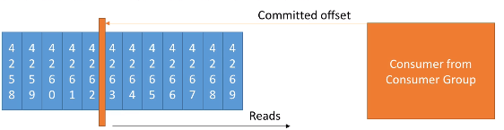
El commit de los mensajes está muy relacionado con la semántica de la entrega. Los consumidores eligen cuando realizar el commit de los offsets:
- At most once (como mucho una vez): se realiza el commit del mensaje tan pronto como se recibe el mensaje. Si falla su procesamiento, el mensaje se perderá (y no se volverá a leer).
- At least once (como poco una vez) (opción más equilibrada): El commit se realiza una vez procesado el mensaje. Este enfoque puede resultar en un procesado duplicado de los mensajes, por lo que hemos de asegurarnos que son idempotentes (el volver a procesar un mensaje no tendrá un impacto en el sistema)
- Exactly once: en flujos Kafka → Kafka, se consigue activando productores idempotentes y transaccionales (o usando el API de Kafka Streams, que lo gestiona internamente). Cuando Kafka interactúa con sistemas externos (una base de datos, por ejemplo), se recomienda diseñar consumidores idempotentes, ya que la garantía de exactly-once depende también del sistema de destino.
Descubrimiento de brokers¶
Cada broker de Kafka es un bootstrap server, lo que significa que dicho servidor contiene un listado con todos los nodos del clúster, de manera que al conectarnos a un broker, automáticamente nos conectaremos al clúster entero.
Mediante esta configuración, cada broker conoce todos los brokers, topics y particiones (metadatos del clúster).
Así pues, cuando un cliente se conecta a un broker, también realiza una petición de los metadatos, y obtiene un listado con todos los brokers. Tras ello, ya puede conectarse a cualquiera de los brokers que necesite:
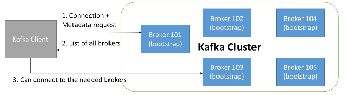
Coordinación del clúster¶
Un clúster de Kafka está formado por múltiples brokers que necesitan ponerse de acuerdo en muchas cosas: qué brokers están vivos, qué topic tiene qué particiones, qué réplica de cada partición es la líder en cada momento, qué configuraciones se han modificado y cuándo... A todo este conjunto de información lo llamamos los metadatos del clúster, y para gestionarlos se necesita un mecanismo de coordinación distribuida.
A lo largo de su historia, Kafka ha utilizado dos enfoques distintos para resolver este problema.
ZooKeeper¶
Históricamente, Kafka delegaba toda la coordinación en Apache ZooKeeper, un servicio independiente para mantener configuración, coordinación y aprovisionamiento de aplicaciones distribuidas dentro del ecosistema Apache.
En este modelo, ZooKeeper:
- gestiona los brokers (manteniendo una lista de ellos),
- ayuda en la elección de la partición líder,
- envía notificaciones a Kafka cuando hay algún cambio (por ejemplo, se crea un topic, se cae un broker, se recupera un broker, se elimina un topic, etc.).
En un entorno real, se instalan un número impar de servidores ZooKeeper (3, 5 o 7) para tener tolerancia a fallos. Para su gestión, ZooKeeper define un líder que gestiona las escrituras, y el resto de los servidores funcionan como réplicas de lectura.
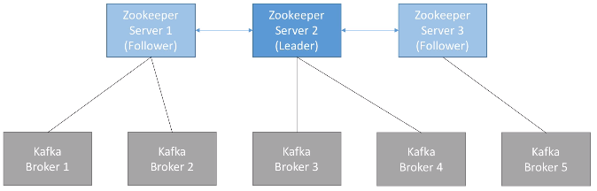
Pese a esta dependencia, los productores y consumidores no interactúan nunca con ZooKeeper, sólo lo hacen con Kafka.
KRaft¶
Tener un sistema externo solo para la coordinación tenía varios inconvenientes: dos clústeres que mantener, dos puntos de fallo, dos protocolos de red, dos sistemas de monitorización... y un límite práctico al tamaño del clúster, porque ZooKeeper no escala bien a partir de unas decenas de miles de particiones.
Para resolver esto, desde Kafka 2.8 (2021) se introdujo KRaft (Kafka Raft), un protocolo de consenso interno basado en Raft que permite a los propios brokers gestionar la coordinación sin depender de un servicio externo.
En KRaft, algunos brokers del clúster asumen el rol adicional de controllers y, entre ellos, eligen un controller líder que gestiona los metadatos. Los metadatos se almacenan en un topic interno (__cluster_metadata) replicado entre los controllers mediante el protocolo Raft, igual que cualquier otro topic de Kafka.
Las ventajas son claras: una sola tecnología que mantener, arranque del clúster mucho más rápido (segundos en lugar de minutos), y capacidad para gestionar millones de particiones en un único clúster.
Adiós ZooKeeper
KRaft se declaró listo para producción en Kafka 3.3 (octubre 2022), ZooKeeper quedó marcado como deprecado en Kafka 3.5 (junio 2023), y desde Kafka 4.0 (marzo 2025) el soporte de ZooKeeper se ha eliminado por completo. Cualquier despliegue moderno de Kafka funciona en modo KRaft.
Aplicándolo a nuestros entornos¶
En la máquina virtual del curso tenemos instalado Kafka 3.3.1, que sigue funcionando con ZooKeeper. Por eso, en el caso 0 hemos tenido que arrancar primero el servicio zookeeper-server-start.sh antes que el propio Kafka.
En el entorno Docker trabajamos con la imagen oficial apache/kafka:latest (Kafka 4.x), que es únicamente KRaft. Si revisamos el docker-compose.yml, veremos que el servicio kafka se configura con tres variables clave:
KAFKA_NODE_ID: 1
KAFKA_PROCESS_ROLES: broker,controller
KAFKA_CONTROLLER_QUORUM_VOTERS: 1@kafka:9093
Lo que esto significa es:
KAFKA_NODE_ID: 1— el identificador único de este nodo dentro del clúster.KAFKA_PROCESS_ROLES: broker,controller— este nodo asume los dos roles a la vez. En clústeres pequeños es habitual ejecutarlos combinados; en producción grande, se separan en máquinas distintas.KAFKA_CONTROLLER_QUORUM_VOTERS: 1@kafka:9093— la lista de controllers que participan en el quórum KRaft, en formatonodeId@host:puerto. Como solo tenemos un nodo, el quórum lo forma él mismo. Si tuviéramos tres controllers, la lista sería1@kafka:9093,2@kafka-2:9093,3@kafka-3:9093.
El puerto 9093 es el que en nuestro KAFKA_LISTENERS hemos llamado CONTROLLER — el canal por el que los controllers hablan entre sí. Ningún cliente externo se conecta a él.
Quórum y tolerancia a fallos
Igual que ocurría con ZooKeeper, un quórum KRaft necesita un número impar de controllers (3, 5 o 7) para tomar decisiones por mayoría. Con 3 controllers se soporta la caída de 1, con 5 se soporta la caída de 2, etc. En el caso 2 (de la siguiente sesión) montaremos un clúster con varios brokers y veremos esto en acción.
En Resumen¶
Kafka garantiza que...
- Los mensajes se añaden a una partición/topic en el orden en el que se envían.
- Los consumidores leen los mensajes en el orden en que se almacenaron en la partición/topic.
- Con un factor de replicación N, los productores y consumidores pueden soportar que se caigan N-1 brokers.
- Por ejemplo, con un factor de replicación de 3 (el cual es un valor muy apropiado), podemos tener un nodo detenido para mantenimiento y podemos permitirnos que otro de los nodos se caiga de forma inesperada.
- Mientras el número de particiones de un topic permanezca constante (no se hayan creado nuevas particiones), la misma clave implicará que los mensajes vayan a la misma partición.
Caso 1: Kafka y Python¶
Para poder producir y consumir mensajes desde Python necesitamos una librería cliente que hable el protocolo de Kafka. A día de hoy, la opción recomendada es confluent-kafka, mantenida por Confluent y construida sobre librdkafka (el cliente C oficial de Kafka). Ofrece mejor rendimiento que las alternativas puras en Python, soporte completo del protocolo, integración con Schema Registry y un desarrollo activo.
Para instalarla, haremos:
pip install confluent-kafka
Alternativa: kafka-python
La librería kafka-python es otra opción muy extendida, escrita íntegramente en Python. Su API es ligeramente más pythónica (objetos iterables, serializadores como argumentos) y eso la hace algo más sencilla de explicar.
Sin embargo, kafka-python lleva sin recibir mantenimiento significativo desde 2020 y presenta problemas conocidos con versiones recientes de Kafka 3.x y 4.x. Por eso, en estos apuntes usaremos confluent-kafka, que es la opción profesional y la que encontrarás en cualquier entorno de producción.
Conexión al broker¶
Como vimos al final del caso 0, la dirección a la que se conecta nuestro código depende de dónde se ejecute:
- Si lanzamos el script Python desde nuestra máquina anfitriona (por ejemplo, abriendo VSCode y ejecutando con el Python del sistema), debemos usar
localhost:9094. - Si lo ejecutamos desde dentro del contenedor de Jupyter del compose, debemos usar
kafka:9092. - Si trabajamos en la máquina virtual, usamos
iabd-virtualbox:9092.
A lo largo del caso, usaremos localhost:9094 como dirección por defecto (asumimos que ejecutas desde tu máquina), e indicaremos en pestañas las alternativas para los otros dos entornos.
Consumiendo mensajes¶
Vamos a empezar por la parte más visual: ver llegar mensajes a un topic. Creamos un archivo consumidor.py con el siguiente contenido:
from confluent_kafka import Consumer
conf = {
'bootstrap.servers': 'localhost:9094', # Docker
# 'bootstrap.servers': 'iabd-virtualbox:9092', # Máquina virtual
'group.id': 'iabd-grupo',
'auto.offset.reset': 'earliest'
}
consumer = Consumer(conf)
consumer.subscribe(['iabd-topic'])
try:
while True:
msg = consumer.poll(timeout=1.0)
if msg is None:
continue
if msg.error():
print(f"Error: {msg.error()}")
continue
print(f"Recibido: {msg.value().decode('utf-8')}")
except KeyboardInterrupt:
pass
finally:
consumer.close()
Tres aspectos clave de la configuración:
bootstrap.servers: la dirección del broker de arranque, ya comentada.group.id: identifica el grupo de consumidores al que pertenece este consumidor. Aunque trabajemos con un único consumidor, Kafka lo necesita para llevar la cuenta de los offsets leídos. Hablaremos en detalle de grupos de consumidores más adelante.auto.offset.reset: indica qué hacer cuando el consumidor se conecta por primera vez a una partición y no tiene un offset previo. Conearliestlee desde el principio, conlatest(valor por defecto) solo lee mensajes nuevos.
El bucle poll()
A diferencia de otras librerías que usan iteradores, confluent-kafka sigue el patrón de librdkafka: en un bucle, vamos llamando a consumer.poll(timeout=1.0) para pedir el siguiente mensaje disponible. Si no hay mensajes nuevos en ese segundo de espera, poll() devuelve None y volvemos a intentarlo.
Este patrón es algo más verboso pero da mucho control sobre el manejo de errores, commits manuales y eventos del cliente.
Si lo lanzamos mediante:
python consumidor.py
# Recibido: Este es un mensaje
# Recibido: Y este es otro
# Recibido: Y el tercero
El consumidor se quedará esperando mensajes. Verás mensajes de conexión al broker y, si todavía no hay nada en el topic, se quedará tranquilamente en el bucle de poll(). Para terminarlo, pulsamos Ctrl+C.
Produciendo mensajes¶
Ahora, en otro terminal, creamos productor.py:
from confluent_kafka import Producer
conf = {
'bootstrap.servers': 'localhost:9094' # Docker
# 'bootstrap.servers': 'iabd-virtualbox:9092' # Máquina virtual
}
producer = Producer(conf)
def delivery_report(err, msg):
if err is not None:
print(f"Error al entregar: {err}")
else:
print(f"Mensaje enviado a {msg.topic()} [partición {msg.partition()}]")
for i in range(10):
mensaje = f"Mensaje número {i}"
producer.produce('iabd-topic', value=mensaje.encode('utf-8'), callback=delivery_report)
producer.poll(0)
producer.flush()
Algunas particularidades del productor:
producer.produce(...)es asíncrona: no envía el mensaje inmediatamente, sino que lo coloca en una cola interna; librdkafka lo enviará en batch junto con otros mensajes para optimizar el rendimiento.callback=delivery_report: la función que se invocará cuando Kafka confirme (o falle) la entrega del mensaje. Nos da el topic, la partición y el offset asignados.producer.poll(0): dentro del bucle, le decimos al productor que procese los callbacks pendientes sin bloquear. Si no hacemos esto, los callbacks solo se ejecutan al final.producer.flush(): al terminar, esperamos a que todos los mensajes en la cola se envíen y sus callbacks se ejecuten antes de cerrar el proceso. Sin esto, podríamos perder mensajes que aún no se hubieran transmitido.
Si lanzamos el productor:
python productor.py
# Mensaje enviado a iabd-topic [partición 1]
# Mensaje enviado a iabd-topic [partición 1]
# Mensaje enviado a iabd-topic [partición 1]
# Mensaje enviado a iabd-topic [partición 1]
# Mensaje enviado a iabd-topic [partición 2]
# Mensaje enviado a iabd-topic [partición 2]
# Mensaje enviado a iabd-topic [partición 0]
# Mensaje enviado a iabd-topic [partición 0]
# Mensaje enviado a iabd-topic [partición 0]
# Mensaje enviado a iabd-topic [partición 0]
Veremos los delivery_report confirmando el envío de cada mensaje, y simultáneamente el consumidor (en el otro terminal) los irá imprimiendo conforme los reciba, demostrando que el orden se respeta dentro de cada partición, pero no entre particiones:
Recibido: Mensaje número 0
Recibido: Mensaje número 4
Recibido: Mensaje número 8
Recibido: Mensaje número 9
Recibido: Mensaje número 2
Recibido: Mensaje número 7
Recibido: Mensaje número 1
Recibido: Mensaje número 3
Recibido: Mensaje número 5
Recibido: Mensaje número 6
Mensajes con clave¶
Como vimos en el subapartado de Productores, la clave de un mensaje determina la partición a la que se envía: todos los mensajes con la misma clave caen en la misma partición, lo que garantiza el orden entre ellos.
Para enviar mensajes con clave, basta con añadir el parámetro key a produce():
from confluent_kafka import Producer
conf = {'bootstrap.servers': 'localhost:9094'}
producer = Producer(conf)
ciudades = ['Madrid', 'Barcelona', 'Valencia', 'Sevilla']
for i in range(10):
ciudad = ciudades[i % len(ciudades)]
mensaje = f"Temperatura {20 + i % 10}ºC en {ciudad}"
producer.produce(
'iabd-topic',
value=mensaje.encode('utf-8'),
key=ciudad.encode('utf-8')
)
producer.poll(0)
producer.flush()
Para ver la clave también en el consumidor, modificamos la línea del print del consumidor:
print(
f"Recibido "
f"[key={msg.key().decode('utf-8')}] "
f"[partition={msg.partition()}] "
f"[offset={msg.offset()}]: "
f"{msg.value().decode('utf-8')}"
)
Al ejecutarlo veremos como todos los mensajes de Madrid aterrizan en la misma partición, mientras que en este caso, los de Barcelona en otra:
Recibido [key=Madrid] [partition=1] [offset=46]: Temperatura 20ºC en Madrid
Recibido [key=Valencia] [partition=1] [offset=47]: Temperatura 22ºC en Valencia
Recibido [key=Sevilla] [partition=1] [offset=48]: Temperatura 23ºC en Sevilla
Recibido [key=Madrid] [partition=1] [offset=49]: Temperatura 24ºC en Madrid
Recibido [key=Valencia] [partition=1] [offset=50]: Temperatura 26ºC en Valencia
Recibido [key=Sevilla] [partition=1] [offset=51]: Temperatura 27ºC en Sevilla
Recibido [key=Madrid] [partition=1] [offset=52]: Temperatura 28ºC en Madrid
Recibido [key=Barcelona] [partition=2] [offset=23]: Temperatura 21ºC en Barcelona
Recibido [key=Barcelona] [partition=2] [offset=24]: Temperatura 25ºC en Barcelona
Recibido [key=Barcelona] [partition=2] [offset=25]: Temperatura 29ºC en Barcelona
Mensajes en JSON
Hasta ahora estamos enviando cadenas de texto, pero lo habitual es trabajar con estructuras más ricas. Kafka transporta bytes: somos nosotros quienes decidimos el formato. Para JSON, basta con serializar antes de enviar y deserializar al recibir:
import json
datos = {
"ciudad": random.choice(ciudades),
"temperatura": round(random.uniform(10, 40), 2),
"humedad": round(random.uniform(20, 90), 2)
}
mensaje_json = json.dumps(datos)
producer.produce('iabd-topic', value=mensaje_json.encode('utf-8'), callback=delivery_report)
Y en el consumidor:
datos = json.loads(msg.value().decode('utf-8'))
Para escenarios donde el schema importa (sistemas en producción, evolución de formato), se usa Schema Registry con Avro, Protobuf o JSON Schema, pero queda fuera del alcance de esta sesión.
Tipos de conexión¶
En el caso 1 hemos visto que, dependiendo de dónde se ejecute nuestro código, debemos apuntar a una dirección distinta: kafka:9092 desde dentro de la red Docker, localhost:9094 desde nuestra máquina anfitriona. En este apartado vamos a entender por qué, ya que es uno de los errores más comunes a la hora de conectar clientes a Kafka.
hostname vs container_name
En el docker-compose.yml definimos dos cosas distintas:
container_name: iabd-kafka— el nombre que verás endocker ps,docker execodocker logs. Es el nombre administrativo del contenedor.hostname: kafka— el nombre por el que el contenedor es accesible dentro de la red Docker. Es lo que resuelve el DNS interno de la redspark-net.
Por eso, para inspeccionar el contenedor usas docker exec -it iabd-kafka bash, pero para conectarte al broker desde otro contenedor usas kafka:9092. Son dos nombres que se refieren al mismo proceso, pero desde dos planos distintos.
Cuando un cliente (productor o consumidor) se conecta a un clúster de Kafka, la conexión sucede en dos fases:
- Fase de bootstrap. El cliente abre una conexión TCP con cualquiera de las direcciones que le hemos pasado en
bootstrap_servers. A ese broker le pide los metadatos del clúster: lista de brokers, topics, particiones y, sobre todo, en qué dirección escucha cada broker. - Fase de operación. A partir de ahí, el cliente se desconecta del bootstrap y se vuelve a conectar a las direcciones que el clúster le ha devuelto, para producir o consumir contra cada partición en su broker líder.
Aquí está el detalle importante: la dirección que el bootstrap devuelve al cliente no es la que el cliente utilizó para conectarse, sino la que el broker tiene configurada como su dirección "anunciada". Es decir, Kafka responde "para hablar conmigo, conéctate aquí", y ese "aquí" lo decide el administrador en la configuración del broker.
Esto tiene mucho sentido cuando piensas en un clúster real: el cliente quizá ha entrado por un DNS o un load balancer, pero después debe poder dirigirse a cada broker individualmente para leer y escribir en las particiones correctas.
Listeners y advertised listeners¶
Aquí entran en juego dos propiedades de configuración:
listeners: las direcciones (host:puerto) en las que el broker escucha físicamente. Son los sockets que abre al arrancar.advertised.listeners: las direcciones que el broker anuncia a los clientes cuando estos piden metadatos. Es lo que el cliente usará en la fase 2.
En despliegues sencillos (todo en una misma máquina, sin contenedores), listeners y advertised.listeners pueden ser iguales y nadie tiene que pensar en ello. Pero en cuanto hay una red intermedia —Docker, Kubernetes, una VPC, un NAT— las dos cosas pueden ser, y normalmente son, distintas.
Volvamos al docker-compose.yml del curso. El bloque relevante del servicio kafka es:
KAFKA_LISTENERS: PLAINTEXT://:9092,CONTROLLER://:9093,EXTERNAL://:9094
KAFKA_ADVERTISED_LISTENERS: PLAINTEXT://kafka:9092,EXTERNAL://localhost:9094
KAFKA_LISTENER_SECURITY_PROTOCOL_MAP: CONTROLLER:PLAINTEXT,PLAINTEXT:PLAINTEXT,EXTERNAL:PLAINTEXT
KAFKA_INTER_BROKER_LISTENER_NAME: PLAINTEXT
Estamos definiendo tres listeners con nombres distintos. Es importante entender que PLAINTEXT, CONTROLLER y EXTERNAL son simplemente nombres lógicos que nosotros elegimos; Kafka solo necesita saber, mediante LISTENER_SECURITY_PROTOCOL_MAP, qué protocolo de seguridad usa cada uno (en nuestro caso todos en claro, sin cifrado ni autenticación).
| Listener | Escucha en (listeners) |
Anuncia (advertised.listeners) |
¿Para quién? |
|---|---|---|---|
PLAINTEXT |
:9092 |
kafka:9092 |
Clientes dentro de la red Docker |
CONTROLLER |
:9093 |
(no se anuncia) | Comunicación interna KRaft |
EXTERNAL |
:9094 |
localhost:9094 |
Clientes desde la máquina anfitriona |
Y la línea KAFKA_INTER_BROKER_LISTENER_NAME: PLAINTEXT indica que, cuando haya varios brokers en el clúster (en el caso 2 lo veremos), deben hablar entre ellos por el listener PLAINTEXT (es decir, por la red Docker interna), no por el EXTERNAL.
¿Por qué CONTROLLER no se anuncia?
El listener CONTROLLER es para uso exclusivo del protocolo KRaft —el sustituto de ZooKeeper en Kafka 4— y solo lo utilizan los nodos del clúster entre sí para elegir el controller leader. Los clientes no se conectan a él, por lo que no tiene sentido anunciarlo.
Una conexión paso a paso¶
Veamos qué sucede exactamente cuando lanzamos nuestro productor.py desde el host apuntando a localhost:9094:
- El cliente abre una conexión TCP a
localhost:9094. Docker enruta ese puerto al contenedorkafka(gracias alports: - '9094:9094'del compose). - El cliente envía una petición de metadatos.
- El broker responde: "Soy el broker 1, mi dirección es
localhost:9094" (porque la petición ha entrado por el listenerEXTERNAL, y eso es lo queEXTERNALanuncia). - El cliente desconecta del bootstrap y abre una conexión nueva a
localhost:9094para producir mensajes. Funciona.
Ahora repitamos el ejercicio desde dentro del contenedor de Jupyter apuntando a kafka:9092:
- El cliente abre una conexión TCP a
kafka:9092. Docker resuelvekafkamediante su DNS interno y conecta directamente al contenedor. - El cliente pide metadatos.
- El broker responde: "Mi dirección es
kafka:9092" (la petición ha entrado por el listenerPLAINTEXT). - El cliente se reconecta a
kafka:9092. Funciona.
¿Y si nos equivocamos y desde el host apuntamos a localhost:9092?
- La conexión TCP falla inmediatamente porque el puerto
9092no está publicado en el host (en el compose solo publicamos el9094).
¿Y si desde el host apuntamos a localhost:9094 pero por error el broker estuviera anunciando kafka:9092 también en ese listener?
- La conexión inicial al
localhost:9094funciona. - El cliente pide metadatos y el broker le devuelve
kafka:9092. - El cliente intenta resolver
kafkadesde el host... y falla, porque ese nombre solo existe dentro de la red Docker.
Este último escenario es la causa más habitual de los errores tipo NoBrokersAvailable o de los timeouts misteriosos en Kafka sobre Docker: el cliente parece conectar al principio y luego "deja de funcionar", cuando en realidad lo que pasa es que está intentando reconectar a una dirección que solo existe dentro de la red interna.
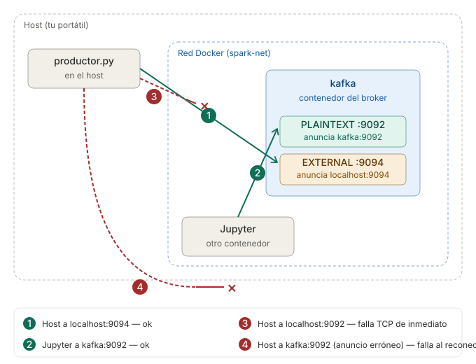
Regla de oro
El advertised.listener debe ser la dirección tal y como la ve el cliente. Si tu cliente está fuera de Docker, debe ver localhost (o la IP/DNS pública de tu host). Si está dentro de la red Docker, debe ver el nombre del servicio (kafka).
En nuestro caso, el advertised.listener del listener EXTERNAL es localhost:9094, y el del listener PLAINTEXT es kafka:9092. Por eso:
- Si lanzas un script Python desde tu portátil (fuera de Docker) → usa
localhost:9094. - Si lo lanzas desde Jupyter / Nifi / Spark del compose → usa
kafka:9092.
Y en la máquina virtual, ¿qué pasa?
En la instalación nativa de la máquina virtual no hay capas de red intermedias: el broker escucha en localhost:9092 (o en iabd-virtualbox:9092 si nos conectamos desde otra máquina del mismo host-only network), y el cliente se conecta directamente. Como no hay redireccionamientos ni puertos publicados, listeners y advertised.listeners suelen coincidir y normalmente ni siquiera tocamos advertised.listeners explícitamente.
Por eso esta confusión solo aparece en entornos contenedorizados o en cloud: ahí donde la dirección que ve el cliente no es la misma que la que tiene el proceso del broker.
FAQ¶
A continuación se recogen algunas de las preguntas habituales que suelen realizarse en entrevistas de trabajo sobre los conceptos vistos en esta sesión.
¿Qué problema resuelve Kafka y por qué no usar simplemente una base de datos o una cola tradicional como RabbitMQ?
Kafka resuelve el problema de desacoplar productores y consumidores de datos en sistemas distribuidos de alto volumen. A diferencia de:
- Una base de datos relacional, Kafka está diseñado para escrituras append-only a muy alto throughput (millones de mensajes/segundo) y para consumo asíncrono por múltiples sistemas.
- Una cola tradicional (RabbitMQ, ActiveMQ), Kafka es un log distribuido: los mensajes no se borran al consumirse, sino que permanecen un tiempo de retención configurable, lo que permite reprocesar datos, conectar nuevos consumidores que lean desde el principio, o que distintos sistemas (analítica, ML, auditoría) consuman los mismos datos de forma independiente.
Por eso Kafka se usa como columna vertebral de arquitecturas event-driven, streaming y Big Data, mientras que una cola tradicional es más adecuada para mensajería transaccional punto a punto.
¿Qué es una partición y por qué son tan importantes en Kafka?
Una partición es una secuencia ordenada e inmutable de mensajes, almacenada físicamente como un commit log en un broker. Un topic se divide en una o varias particiones, y cada partición se replica entre varios brokers.
Las particiones son la unidad fundamental de:
- Paralelismo: cada partición puede leerse por un consumidor distinto del mismo grupo, así el throughput de lectura escala con el número de particiones.
- Distribución: distintas particiones del mismo topic viven en distintos brokers, repartiendo carga y almacenamiento.
- Orden: el orden de los mensajes solo se garantiza dentro de una partición, no entre particiones del mismo topic. Para preservar el orden por entidad (por ejemplo, todos los eventos de un usuario), se usa la clave del mensaje.
¿Qué es un offset y quién lo gestiona?
Un offset es un identificador numérico, incremental y único dentro de una partición, que marca la posición de cada mensaje. El offset 5 de la partición 0 no es el mismo mensaje que el offset 5 de la partición 1.
El broker no recuerda qué consumidor ha leído qué — esa responsabilidad recae en el propio grupo de consumidores, que va haciendo commit del último offset procesado en un topic interno especial llamado __consumer_offsets. Así, si un consumidor se cae, al volver puede retomar la lectura desde el último offset confirmado.
¿Qué garantías de orden ofrece Kafka?
Kafka garantiza el orden únicamente dentro de una partición. Es decir:
- Si dos mensajes se escriben en la misma partición, se leerán en el mismo orden en que se escribieron.
- Si dos mensajes se escriben en particiones distintas (aunque sea del mismo topic), no hay garantía de orden entre ellos.
Para garantizar el orden por entidad (por ejemplo, todos los eventos de un cliente), se debe enviar la clave correspondiente (customer_id), de forma que todos sus mensajes acaben siempre en la misma partición.
¿Cuál es la diferencia entre acks=0, acks=1 y acks=all en un productor?
El parámetro acks controla cuánto espera el productor para confirmar que un mensaje se ha escrito correctamente:
acks |
Espera confirmación de... | Riesgo | Rendimiento |
|---|---|---|---|
0 |
Nada (fire and forget) | Pérdida total si el broker cae | Máximo |
1 |
Solo el líder de la partición | Pérdida si el líder cae antes de replicar | Equilibrado |
all (o -1) |
Líder y todas las réplicas en sincronía (ISR) | Sin pérdida (con min.insync.replicas adecuado) |
Menor |
En sistemas críticos se usa acks=all junto con min.insync.replicas=2 y productores idempotentes para conseguir durabilidad sin duplicados.
¿Qué es un grupo de consumidores y qué pasa cuando se cae uno de sus miembros?
Un grupo de consumidores es un conjunto de procesos consumidores identificados por el mismo group.id, que se reparten las particiones de un topic para procesarlas en paralelo. Kafka garantiza que cada partición es leída por un único consumidor del grupo en cada instante.
Cuando uno de los consumidores se cae (o se añade uno nuevo), se produce un rebalance: Kafka redistribuye las particiones entre los consumidores activos. Durante el rebalance el consumo se pausa brevemente. Desde Kafka 2.4, gracias al Cooperative Sticky Assignor, los rebalances son incrementales y solo afectan a las particiones que cambian de dueño, sin parar todo el grupo.
¿Qué es el consumer lag y por qué es la métrica más importante de monitorizar?
El lag es la diferencia entre el último offset escrito en una partición (LOG-END-OFFSET) y el último offset que el grupo ha confirmado (CURRENT-OFFSET). Indica cuántos mensajes están pendientes de consumir.
Es la métrica clave en producción porque:
- Un lag creciente significa que los consumidores no llevan el ritmo del productor, lo que puede saturar el clúster o retrasar la analítica en tiempo real.
- Un lag alto en una partición concreta indica un consumidor lento o un sesgo (skew) en las claves.
Se puede consultar mediante kafka-consumer-groups.sh --describe o desde Kafka UI, y en producción se monitoriza con Prometheus, Datadog u otras herramientas.
Explica las tres semánticas de entrega: at-most-once, at-least-once y exactly-once.
Las tres semánticas determinan qué garantía de procesamiento ofrece el consumidor:
- At-most-once: el commit del offset se hace antes de procesar el mensaje. Si el consumidor cae después del commit pero antes de procesar, se pierde el mensaje. Se usa cuando es preferible perder algún dato a procesarlo dos veces (por ejemplo, métricas no críticas).
- At-least-once: el commit se hace después de procesar. Si el consumidor cae tras procesar pero antes de hacer commit, al reiniciarse volverá a procesar ese mensaje. Es la opción más habitual; exige que el procesamiento sea idempotente (procesar dos veces el mismo mensaje no altera el resultado).
- Exactly-once: cada mensaje se procesa exactamente una vez. En flujos Kafka → Kafka se consigue con productores idempotentes (
enable.idempotence=true, por defecto desde 3.0) y transacciones (transactional.id). En flujos hacia sistemas externos depende también del destino — la solución habitual es diseñar el destino para que sea idempotente.
¿Por qué Kafka 4.0 ha eliminado ZooKeeper y qué es KRaft?
Durante años Kafka dependía de ZooKeeper para gestionar los metadatos del clúster (lista de brokers, particiones líder, configuración...). Esto suponía mantener dos sistemas distribuidos distintos, con dos puntos de fallo, dos protocolos, y un límite práctico al escalar más allá de unas decenas de miles de particiones.
KRaft (Kafka Raft), introducido en Kafka 2.8 y declarado production-ready en 3.3, sustituye a ZooKeeper por un protocolo de consenso interno basado en Raft: algunos brokers asumen el rol de controllers y replican los metadatos entre ellos en un topic especial (__cluster_metadata).
Las ventajas son:
- Una sola tecnología que mantener, monitorizar y securizar.
- Arranque mucho más rápido del clúster (segundos en lugar de minutos).
- Escalabilidad a millones de particiones por clúster.
Desde Kafka 4.0 (marzo 2025), ZooKeeper se ha eliminado por completo y solo se soporta el modo KRaft.
¿Qué son los listeners y los advertised listeners? ¿Por qué dan tantos problemas en Docker?
Son dos propiedades de configuración del broker con un rol distinto:
listeners: las direcciones (host:puerto) donde el broker escucha físicamente sus sockets.advertised.listeners: las direcciones que el broker anuncia a los clientes cuando estos piden metadatos del clúster.
Cuando un cliente se conecta, primero abre conexión a un bootstrap server, pero después se reconecta a la dirección anunciada por el broker. Si esa dirección no es resoluble desde el cliente (típico en Docker: el cliente está fuera de la red y el broker anuncia un hostname interno), el cliente da errores NoBrokersAvailable o timeouts después de la conexión inicial.
La solución es configurar múltiples listeners con nombres distintos (por ejemplo PLAINTEXT para clientes internos y EXTERNAL para clientes desde el host), cada uno con su dirección anunciada apropiada al entorno desde donde se accede.
¿Cómo se decide el número de particiones de un topic?
Es una decisión de diseño importante porque, aunque se pueden añadir particiones, no se pueden reducir sin recrear el topic, y añadirlas rompe la garantía de "misma clave → misma partición" para los mensajes nuevos.
Las reglas prácticas son:
- El número de particiones marca el paralelismo máximo del lado consumidor: tener más consumidores que particiones no aporta nada (los sobrantes quedan ociosos).
- Se suele dimensionar como
max(throughput_objetivo / throughput_por_partición), donde el throughput por partición depende del hardware y del tipo de procesamiento (típicamente entre 10 y 100 MB/s). - Demasiadas particiones también tienen coste: más ficheros abiertos, más metadatos, rebalances más lentos, mayor consumo de memoria en clientes.
Como punto de partida razonable: empezar con 2-3 veces el número de consumidores previstos, y monitorizar el lag para ajustar.
¿En qué se diferencia Kafka de Apache Pulsar, Amazon Kinesis o Redis Streams?
Todas son plataformas de mensajería/streaming, pero con enfoques distintos:
- Apache Pulsar: arquitectura similar pero separa cómputo (brokers) y almacenamiento (BookKeeper), lo que facilita escalar de forma independiente. Soporta nativamente multi-tenancy y geo-replicación.
- Amazon Kinesis: servicio gestionado de AWS, equivalente conceptual a Kafka pero sin necesidad de operar infraestructura. Menos flexibilidad y vendor lock-in, a cambio de cero mantenimiento.
- Redis Streams: estructura dentro de Redis para mensajería con persistencia opcional. Excelente latencia, pero limitado en throughput y durabilidad respecto a Kafka.
Kafka sigue siendo el estándar de facto cuando se necesitan alto throughput, retención larga, ecosistema de conectores y procesamiento de streams (Kafka Streams, Flink, Spark Streaming).
Referencias¶
- Apache Kafka Series - Learn Apache Kafka for Beginners
- Serie de artículos de Víctor Madrid sobre Kafka en enmilocalfunciona.io.
- Distributed Databases: Kafka por Mikel del Tio.
- Kafka Cheatsheet
Actividades¶
-
(RABDA.1 / CEBDA.1a / 1p) Realiza el caso de uso 0, adjuntando capturas de los comandos utilizados y, en alguno de los mensajes, envía tu nombre.
-
(RABDA.1 / CEBDA.1a / 1.5p) Se pide:
- Crea un topic llamado
iabd-topic-<nombre>con 4 particiones y que permita el envío de claves de mensaje utilizando:como separador. - A continuación, lanza dos consumidores que pertenezcan al grupo de consumidores
consumer-group-<nombre>. - Lanza un productor y envía varios mensajes compuestos de
clave:valory comprueba cómo aparecen en los consumidores. - Detén ambos consumidores.
- Envía un nuevo mensaje.
- Obtén información sobre el estado del grupo de consumidores
consumer-group-<nombre>y explica sus valores.
- Crea un topic llamado
-
(RABDA.1 / CEBDA.1a / 1.5p) A partir de un topic denominado
iabd-python-topicy utilizando Python crea:-
un productor que envíe datos de personas cada 10 segundos al topic.
Para ello, podéis basaros en el siguiente script para la creación de las personas, el cual utiliza la librería Faker y que, cada 10 segundos, crea ficheros con una cantidad aleatoria de datos de personas:
personas.pyfrom faker import Faker import json, time from random import randint from datetime import date fake = Faker('es_ES') today = str(date.today()) i=0 while True: filename = 'datosClientes' + today + '_' + str(i) + '.json' output=open(filename,'w') datos={} datos['records']=[] cant_personas = randint(5,20) for x in range(cant_personas): # datos de un persona data={"nombre":fake.name(), "edad":fake.random_int(min=18, max=80, step=1), "calle":fake.street_address(), "ciudad":fake.city(), "provincia":fake.state(), "cp":fake.postcode(), "longitud":float(fake.longitude()), "latitud":float(fake.latitude())} datos['records'].append(data) # Persistimos los datos en el fichero json.dump(datos, output, indent = 6) i = i + 1 time.sleep(10) # 10 segundos -
un consumidor que reciba las personas y, mediante PyMongo, las inserte en MongoDB en una colección llamada
kafka_personas.Para este apartado se recomienda revisar la sesión de MongoDB y Python
Adjunta el código fuente de ambos scripts, así como capturas de pantalla de la colección en MongoDB con datos rellenados.
-